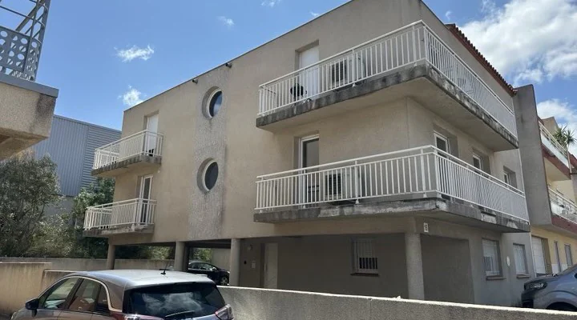
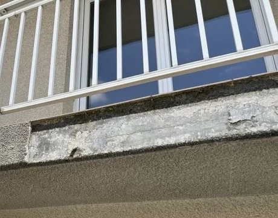

Étape 1
Des supports dégradés, surtout au niveau des balcons
Ce chantier nécessitait une remise en état approfondie de plusieurs supports présentant des fissures et des dégradations, particulièrement au niveau des balcons.

